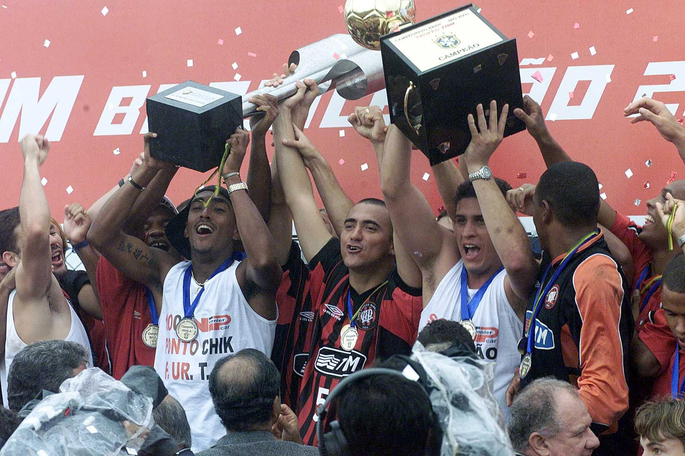
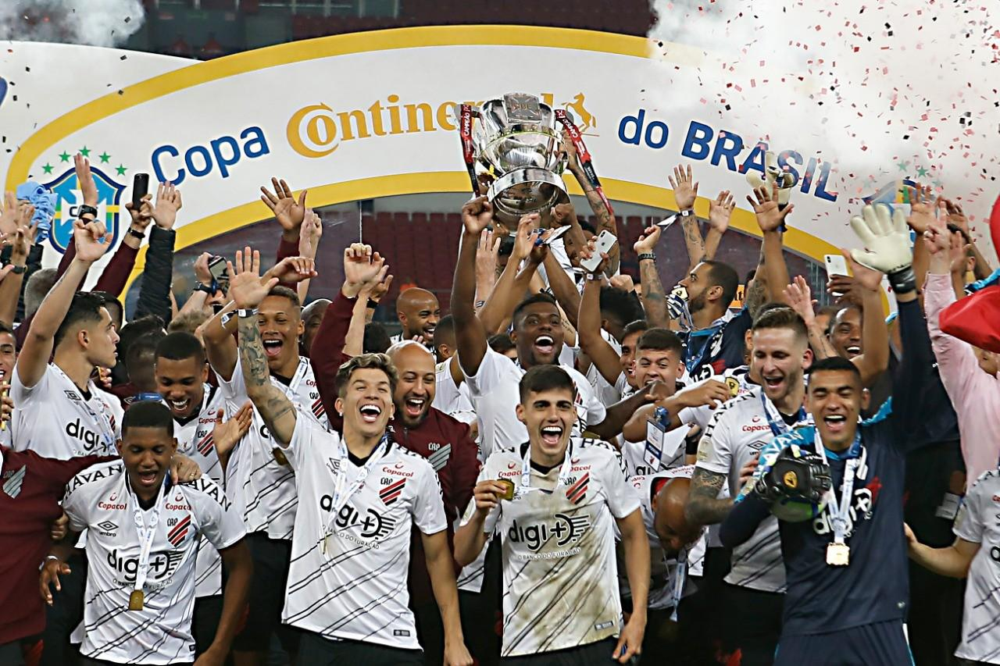
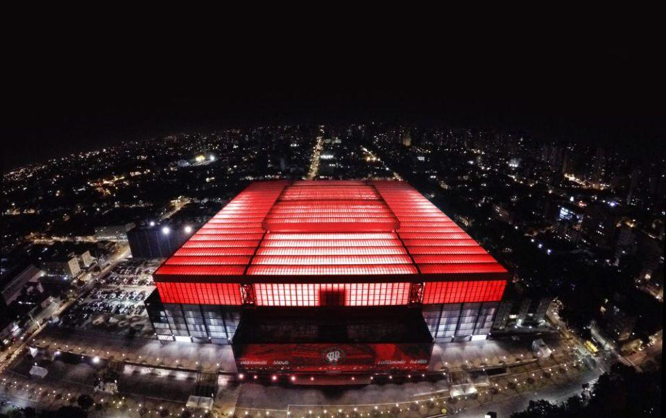
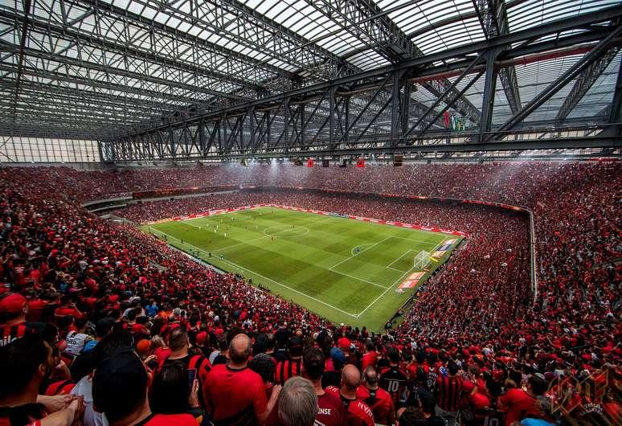
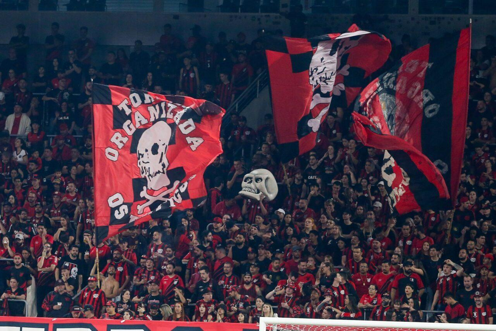

A fundação
O nascimento de um clube que se tornaria uma referência do Paraná.
O CLUBE
O Club Athletico Paranaense é um clube de futebol de Curitiba, no Paraná. Conhecido como Furacão, construiu uma trajetória marcante no futebol estadual, nacional e internacional.
NOSSA TRAJETÓRIA
O Athletico Paranaense foi fundado em 26 de março de 1924, a partir da união do Internacional Futebol Clube com o América Futebol Clube, ambos de Curitiba.
O nascimento de um clube que se tornaria uma referência do Paraná.
O clube ganhou o apelido de Furacão após uma campanha marcante.
O clube iniciou uma importante transformação administrativa e esportiva.
O Athletico conquistou seu primeiro Campeonato Brasileiro da Série A.
O Furacão venceu a Copa Sul-Americana pela primeira vez.
O clube conquistou um dos principais torneios do futebol nacional.

ORGULHO RUBRO-NEGRO
O Athletico construiu uma história de conquistas estaduais, nacionais e internacionais, tornando-se um clube importante no cenário do futebol brasileiro.
2001
Primeiro título brasileiro da Série A.
2018 e 2021
Duas conquistas continentais importantes.
2019
Uma campanha histórica na competição nacional.

Diversas conquistas
Uma trajetória vitoriosa no futebol do Paraná.
NO CONTINENTE
Em 2005, o Furacão chegou à final da Copa Libertadores pela primeira vez. Em 2022, voltou à decisão da competição, mostrando sua força no futebol sul-americano.
NOSSA CASA
Localizada em Curitiba, a Arena da Baixada é a casa do Athletico Paranaense. Conhecida por sua estrutura moderna, recebe partidas de futebol e grandes eventos.

DENTRO DE CAMPO
Os jogadores são fundamentais para a trajetória do clube. Cada geração representa o Athletico em busca de novas vitórias e conquistas.
| Informação | Descrição |
|---|---|
| Posições | Goleiros, defensores, meio-campistas e atacantes |
| Objetivo | Representar o clube nas competições |
| Formação | Desenvolvimento de atletas e trabalho em equipe |
| Identidade | Camisa rubro-negra e tradição do Furacão |

BASTIDORES
A modernização da estrutura do clube e o planejamento administrativo tiveram papel importante na trajetória recente do Athletico Paranaense.
PAIXÃO RUBRO-NEGRA
A torcida é uma parte essencial da identidade do Furacão. Com cantos, bandeiras e apoio nas arquibancadas, os torcedores acompanham o time nos momentos de alegria e dificuldade.
A Torcida Organizada Os Fanáticos, conhecida como TOF, é uma das torcidas organizadas tradicionais ligadas ao clube.

A atmosfera dos jogos é marcada pelos cantos, pelas bandeiras e pela participação dos torcedores.
CLÁSSICOS
O principal clássico do Athletico é contra o Coritiba. Conhecido como Atletiba, o confronto é uma das partidas mais tradicionais do futebol paranaense.
O clube também disputa partidas importantes contra equipes de outras regiões do Brasil e da América do Sul.
VOCÊ SABIA?
O clube foi fundado em 26 de março de 1924.
O time é conhecido como Furacão.
A Arena da Baixada fica em Curitiba, no Paraná.
O vermelho e o preto identificam o clube.
UMA PAIXÃO SEM IGUAL
Uma camisa, duas cores e uma paixão que atravessa gerações.
VOLTAR AO TOPO